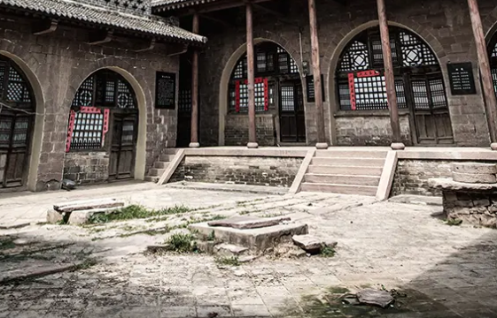

下一站，出发去吴堡！

揽滔滔黄河之胜景，载千年石城之文脉，续魅力城市之华章，从历史中走来的吴堡，既有山的沉稳，也有水的灵动。得天独厚的自然风光，生生不息的历史人文，淳朴浓郁的民俗风情，这里的一砖一瓦、一景一物，都娓娓讲述着们吴堡的当下和过往。 河山胜境，魅力吴堡。如果你正在寻找一个与众不同的旅游目的地，那么黄河岸边的这座小城，值得你来一探究竟。游千年石城，听二碛浪涛，访柳青故里，尝空心挂面，玩黄河漂流，享康体温泉，欢迎你来吴堡！
石墙石屋、石街石巷，吴堡石城，一座用石头堆砌起来的城，一座承载千年历史的城，它是全国保存最完整、建筑历史久远、文物价值极高的一座石城，享有“华夏第一石城”之美誉。从吴堡县城出发，沿着蜿蜒盘旋的公路一路奔向云端，追寻千年石城的魅影。